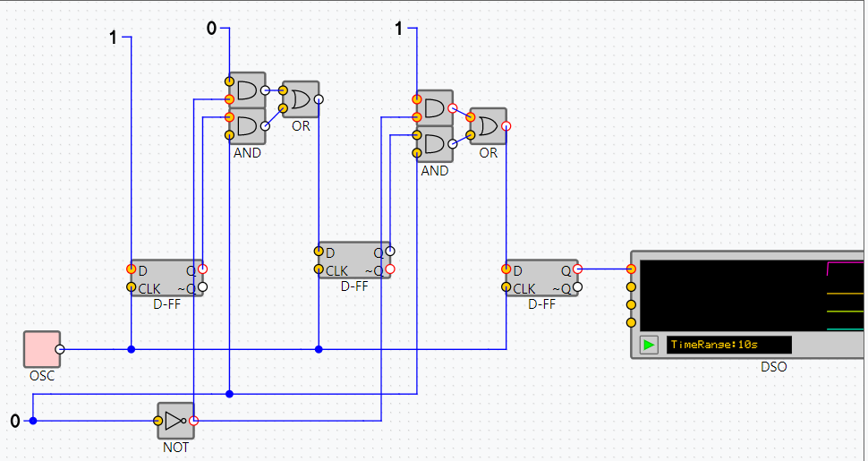

This lab allows you to design and simulate any digital combinational or sequential circuit. Following instruction help you build the Different Registers. A Javascript-based basic tool and simulation enigne is at the hear of this laboratory. You can create many circuits and test them with fixed or time-varying input signals. You can also see the outputs as values or time-varying waveforms.
SISO - Serial In Serial Out
SIPO - Seiral In Parallel Out
PISO - Parallel In Serial Out

PIPO - Parallel In Parallel Out
Here, 8 bit counter is used to generate Serial Data, which acts as an input in SISO and SIPO.
You have 8 options for serial data-
Connect to following D's for respective serials-
D0-0101010101...
D1-0011001100...
D2-0001110001...
D3-0000111100...
D4-0000011111...
D5-0000001111...
D6-0000000111...
D7-0000000011...
USE Numsrc in PIPO & PISO to set inputs to a particular number. Toggle it to get 0/1.